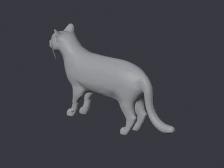
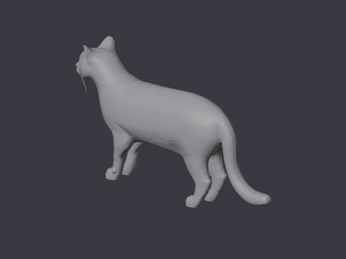
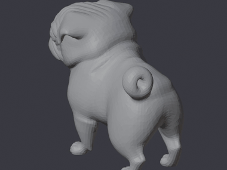

Cat · walkrealistic · 50k tris · M5

Drop in a static mesh and a short driving video, and Temporial returns a topology-consistent animated 3D asset as a looping GIF and a 3D model you in your browser. Or hand it a single mesh and get back a clean, skinned rig. This is the production pipeline running live, not a render.
Upload a textured .glb and a ~4-second driving video. We run ActionMesh across three
autoregressively-anchored windows (the “M5” method) to deform your mesh frame-by-frame, then hand back the looping
GIF and a rotatable animated model.
Upload a single .glb. SkinTokens (TokenRig) predicts a skeleton and per-vertex skin
weights, transferring your original texture and scale. You get back a clean, animation-ready rig.
Each row is one real run including the driving video, then the animated output as GIF and a rotatable 3D model (topology preserved).



This cat was auto-rigged with 27 bones with per-vertex skin weights, rendered live with Three.js. Drag to orbit; the mesh goes translucent so the predicted skeleton shows through. Toggle it with the button.